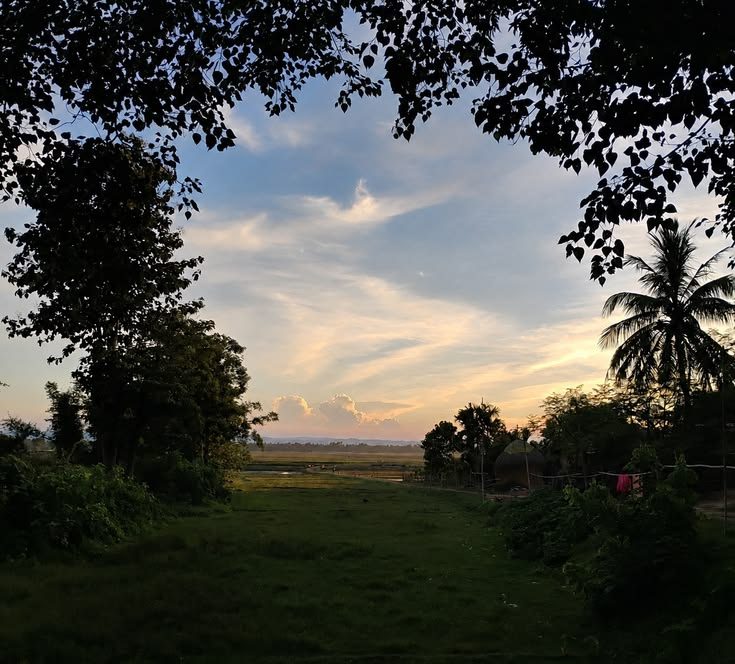
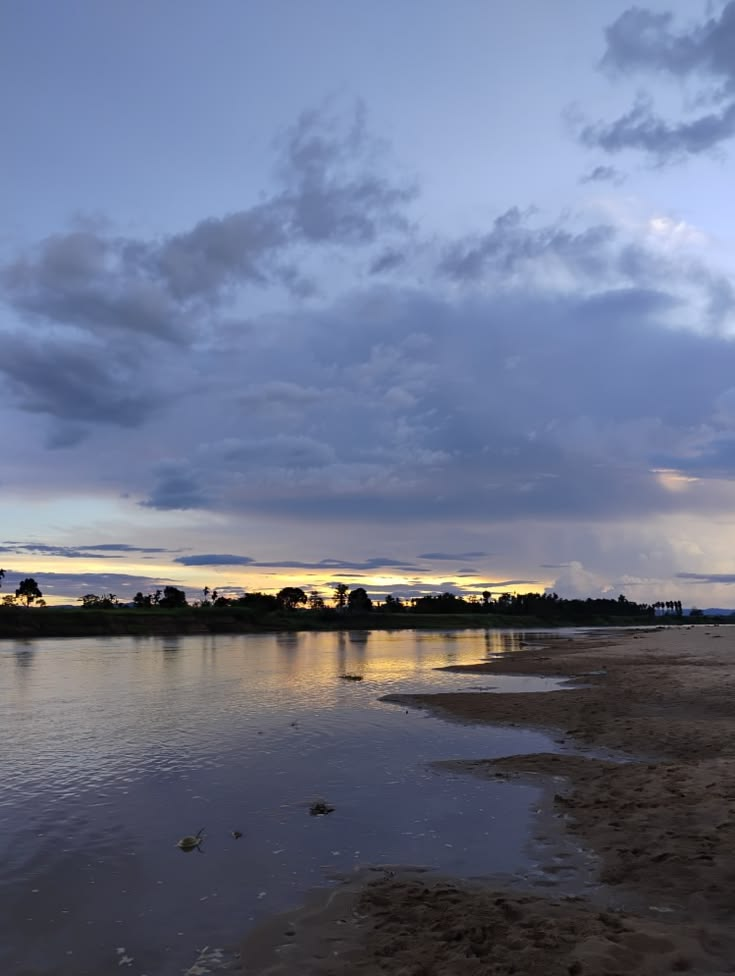
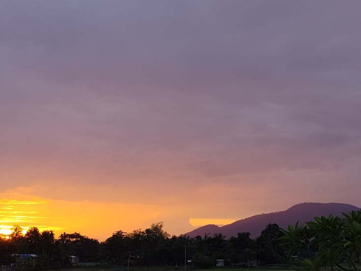
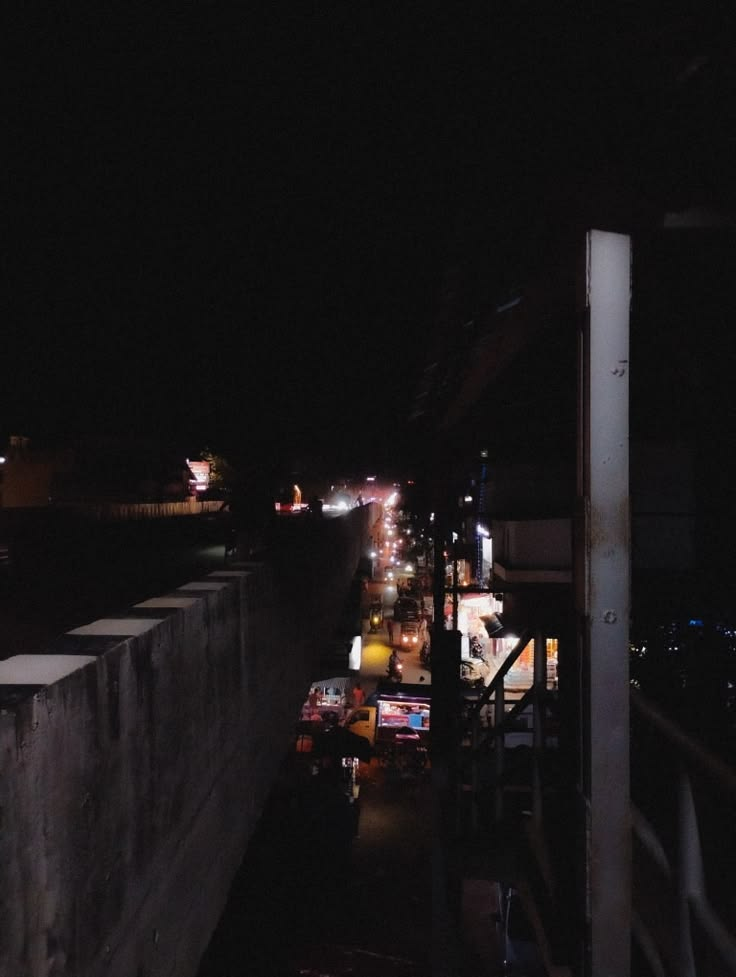

[2026, Jamuhandal, me and my friends were laughing at each other's injury stories]
[2026, Jamuhandal, me and my friends were laughing at each other's injury stories]Photos
[2026, Jamuhandal, me and my friends were laughing at each other's injury stories]
[2026, Amtala, Felt like the golden brown song by the stranglers] [2022, Hills on the way to Nogaon, Guilty of overediting but I don't have the original anymore]
[2022, Hills on the way to Nogaon, Guilty of overediting but I don't have the original anymore] [2026, Hills on the way to Doboka, Seems closer to the eye]
[2026, Hills on the way to Doboka, Seems closer to the eye] [2026, Saotal Village, Part of a much bigger pond]
[2026, Saotal Village, Part of a much bigger pond]
[2026, Kurkut, Almost felt like a beach [2026, Malik Village, I remember the winds]
[2026, Malik Village, I remember the winds] [2021-2022, Golaghat, Lots of memories with this tree, We used to call it local Japan]
[2021-2022, Golaghat, Lots of memories with this tree, We used to call it local Japan] [2026, Nandapur Tongia, Under a broken tree house]
[2026, Nandapur Tongia, Under a broken tree house] [2026, Kurkut, Taken almost exactly oppsoite to the sunset, couldn't figure out the light source]
[2026, Kurkut, Taken almost exactly oppsoite to the sunset, couldn't figure out the light source]
[2026, NH27, The hills felt much closer, the sunset made the hills purplish] [2025, Pachim Jarani, Beside a bridge]
[2025, Pachim Jarani, Beside a bridge] [2026, Home, Taken after staying up all night]
[2026, Home, Taken after staying up all night]
[2026, Hojai Flyover, Urban Photography from Temu] [2024, Where golaghat ends and Nagaland starts, Walked almost half a KM into the hills]
[2024, Where golaghat ends and Nagaland starts, Walked almost half a KM into the hills]{kind=link}
{kind=link}
{kind=link}
{kind=link}